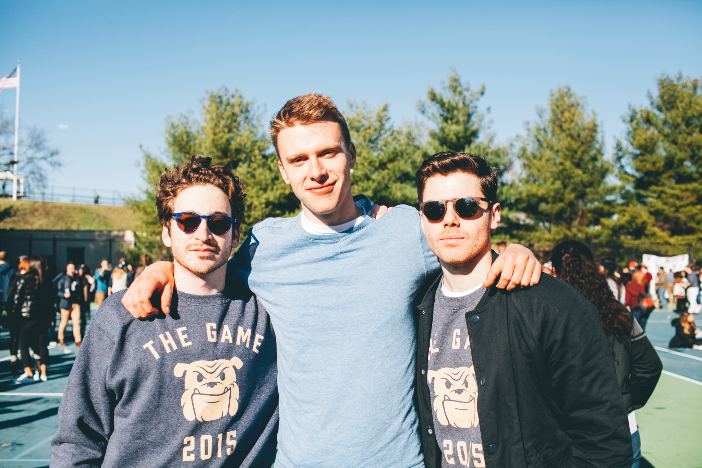
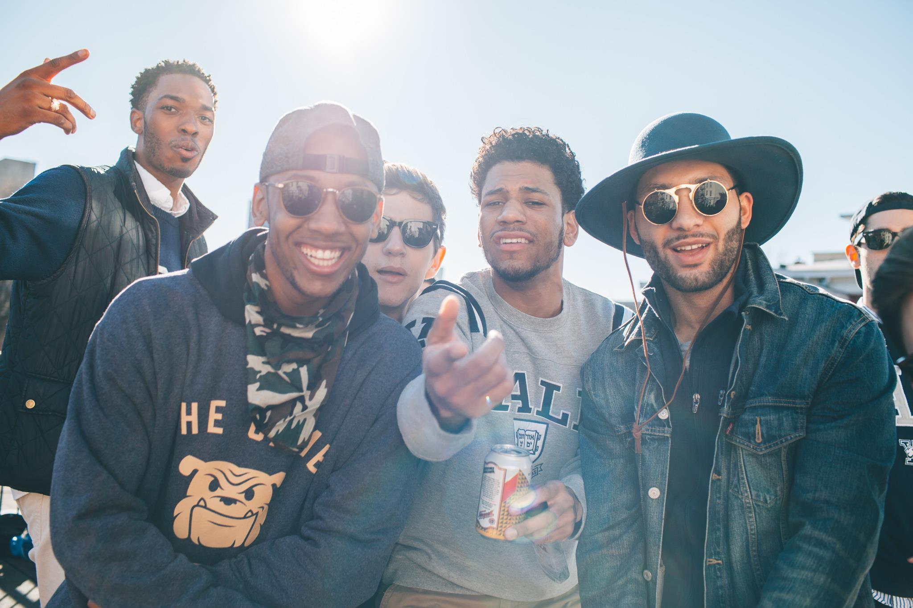

The Game
Entrepreneurship & Apparel Design
Designing, selling & producing a sweatshirt for the oldest rivalry in football

The Game
Harvard-Yale is one of the oldest rivalries in sports; the annual matchup is called, simply, The Game. I designed this sweatshirt in late October 2015, in advance of the 132nd playing of The Game in late November. All in all I sold just under 300 sweatshirts out of my dorm room.
The Situation
After designing long-sleeve t-shirts my first three years at Yale, I decided for my senior year to design a sweatshirt—it gets very chilly in late November. Most Harvard-Yale shirts on campus focus on the anti-Harvard aspect of The Game. I've always preferred the pro-Yale look—it's more fun, in my opinion, to root for your own team than against another, and people are more likely to continue to wear a pro-Yale shirt.
The Process
An consideration when designing this sweatshirt was that at Yale, the traditional Ivy aesthetic reigns supreme. The most common attire for The Game is the old-school Y sweater.
To differentiate in a crowded marketplace of Harvard-Yale t-shirts, I decided to sell sweatshirts, which are more easily worn as an outer layer on game day, and to keep the design as simple as possible, in reference to the classic Y sweater. While designing the bulldog, I was originally inspired by vintage mascots like the Cal Bear, the Michigan Wolverine and the Auburn Tiger—early versions of my bulldog had the common freshman beanie cap visible on these and many other college mascot logos.
I paired the bulldog head with the simple text that sends the message as directly and concisely as possible: The Game 2015. Since I'm not a licensed vendor for Yale, one of the biggest constraints is to design something that screams Yale, without actually saying it.
I also thought it was important not to print on a standard navy sweatshirt. I did a lot of research and decided on a Champion brand heather navy shirt. The heathered aspect, I think, was crucial to making the sweatshirt something more unique.
To sell the shirts, I set up a page on my website, and emailed a list of friends. I considered going all out (putting up posters, posting in huge Yale facebook groups, emailing random panlists) to get as much business as possible.
Ultimately, I decided I would just let my friends know, since much of the joy in this annual project comes from interacting with friends, not dealing with strangers.Additionally, this had the effect of giving the sweatshirts a low-key, underground vibe as something not mass-produced. I did end up getting many inquiries (probably a little over half of the shirts I ended up selling were to people not on my original email), and was happy that I didn't have to sell my soul to gain more business.
My ordering process was simple: fill out a short Google form with name/email/size/quantity and then Venmo me $28 per shirt. One important thing for me was to not take on any risk; I only ordered shirts for people who pre-paid. This meant that all I had to do once the sweatshirts arrived was hand them out, and not have to worry about cash or trying to get rid of boxes of shirts. That approach seems stressful, risky and more time-consuming.
Venmo is a nice way of paying because it's peer to peer, so people knew exactly who they were paying; it also has a nice feed that I can easily check to see whether people have paid or not.
I also enticed people by making a caption contest: whoever sent the best caption (which is required on Venmo) would get half off their sweatshirt. Wanting to get as many of my friends to buy shirts, I set the price at $28—pretty cheap for a sweatshirt (standard Champion sweatshirts in the Yale bookstore cost about $50), while still allowing me a sizable profit. I produced the shirts with Campus Customs, a local New Haven screenprinting shop that I've had a close relationship since my freshman year. Though they don't have the cheapest prices, the proximity is key: sales for The Game apparel spike as The Game approaches, so it's beneficial to submit the order as late as possible.
Since they are close, and because I've built a relationship with them, I can afford to pay slightly higher prices to submit last-minute orders without having to worry about quality or timing due to shipping. In fact, this year, after I sent in my original order (180 shirts) two weeks before the Game, I received enough orders (40) to warrant a second batch, and Campus Customs was able to rush-print them in time for The Game.
Even though Yale lost The Game, I received enough inquiries to encourage me to order a third batch of 80 more shirts. This means both that people liked my sweatshirts, but also that most people don't really care about the actual football game.

Thoughts
Judging by the demand, I could have sold the sweatshirt for much more than $28. But, it was never about maximizing profits for me, as I didn't want to put all of my life into this (I still had classes!), so I ended up happy regardless. I also realized that because I didn't widely advertise, it would've made sense to order more than the handful of extras I ordered both times. After each order (each of which I thought would be the final), the extras I ordered sold out before the shirts even arrived. On the other hand, I never had to worry about getting rid of a bunch of shirts, which took a lot of stress out of the process. I really don't enjoy peddling to passersby, and thankfully I didn't need to.
All photos by Chris Melamed, with the exception of the last one by Alex Borsa.